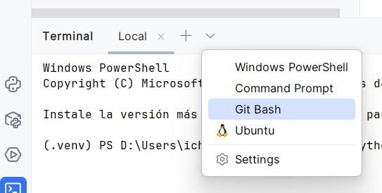
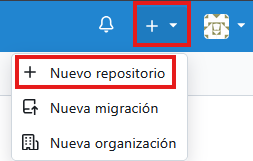
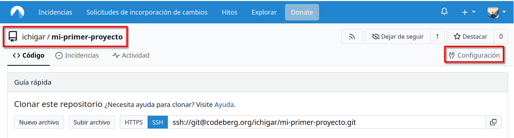
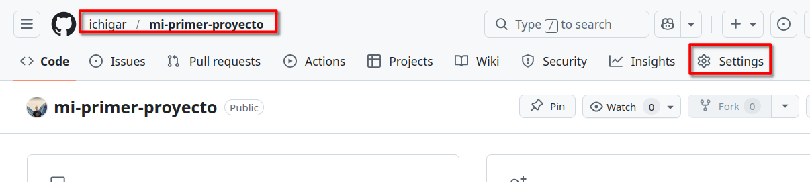
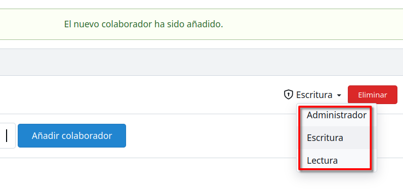
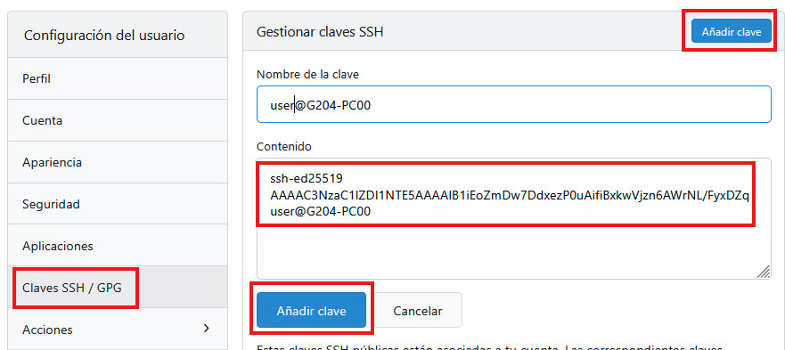
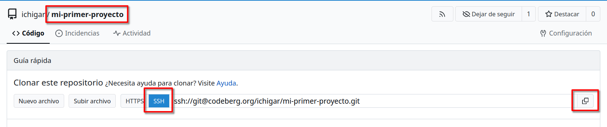
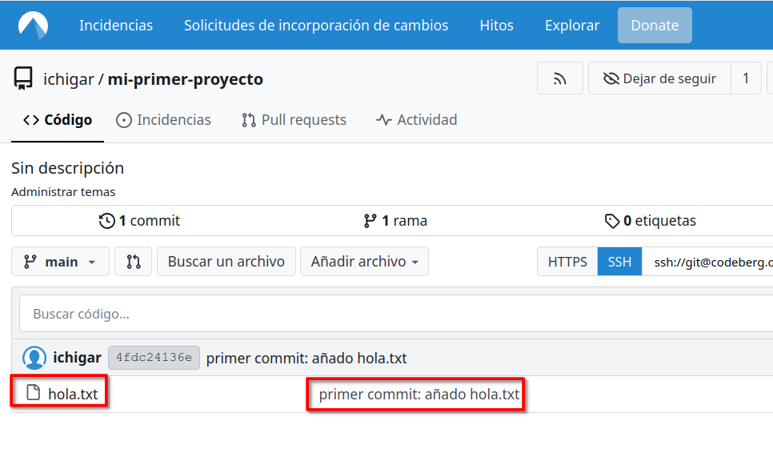

Guía paso a paso. GIT¶
Introducción git¶
Git es un sistema de control de versiones, una herramienta que guarda el historial de cambios de los archivos de un proyecto.
- Ver qué cambió y cuándo
- Volver a una versión anterior si algo se rompe
- Trabajar en equipo sin pisarse los cambios
- Llevar cambios organizados y trazables
Git funciona localmente (en tu ordenador). Además, podemos sincronizarlo con un repositorio remoto (por ejemplo, en GitHub o Codeberg).
Commits
Uno de los conceptos básicos de git son los commits. Un commit es un punto de guardado en el historial del proyecto.
Piensa en un commit como una “foto” del estado del proyecto en un momento concreto, con un mensaje que explica el cambio. Cada commit:
- Tiene un identificador único (hash)
- Incluye autor y fecha
- Permite volver atrás o comparar cambios
Cada vez que terminamos algo importante, hacemos un commit (hacemos una foto del estado actual del proyecto) y le ponemos un mensaje descriptivo, por ejemplo “Añadido menú principal”.
Importante: Un commit NO guarda automáticamente todos los cambios, solo los que hemos añadido.
Pasos para trabajar con Git usando un repositorio en la nube¶
Paso 1: Instalar Git (Windows)¶
- Ve a: https://git-scm.com/download/win
- Descarga el instalador de GitBash y ejecútalo
- Deja todas las opciones por defecto (importante: marca “Git Bash”)
- Al terminar, busca en el menú de inicio: Git Bash y ábrelo
Al instalar GitBash no solo se añade a nuestro el software Git que podemos usar desde los IDEs Pycharm y VSCode y desde el terminal de PowerShell, también se añade un nuevo tipo de terminal que se llama GitBash que se recomienda usar cuando trabajemos con Git desde la línea de comandos.
De forma alternativa lo puedes instalar desde un terminal de PowerShell ejecutando:
winget install --id Git.Git -e --source winget
Paso 2: Configurar tu nombre y correo¶
Abre Git Bash.
Al añadir un terminal en Pycharm y vscode sale la opción de que seleccionar gitbash

Escribe estos dos comandos (cambia los datos por los tuyos):
git config --global user.name "Tu Nombre Completo"
git config --global user.email "tu.correo@ejemplo.com"
El nombre del
user.emaildebería coincidir con el que usaremos para registrarnos en el servicio de repositorio remoto que vayamos a utilizar (github/codeberg).Es obligatorio configurar nombre y email antes de hacer commits.
Comprueba que se aplicó correctamente.
Paso 3: Registrarnos en Codeberg / Github¶
Codeberg y Github son dos plataformas en la nube que nos permiten alojar repositorios Git (y colaborar)
Crear cuenta y repositorio¶
- Ve a https://codeberg.org / https://github.com/
- Pulsa Registro / Sign Upy crea tu cuenta
Añadir un repositorio¶
- Pulsa New repository → pon nombre
mi-primer-proyecto→ deja el resto de apartados en blanco y crea

Comparte el repositorio¶
En caso de que quieras añadir colaboradores al repositorio accedemos a la configuración / settings del mismo:


Y accedemos a colaboradores / collaborators y añadimos o invitamos al usuario al que queremos dar acceso al repositorio.
En Codeberg le podemos poner permiso en el momento de añadirlo

En Github una vez que el colaborador acepte la invitación tiene los permisos necesarios para poder trabajar en el mismo repositorio.
Paso 4. Crear y configurar clave SSH¶
A la hora de trabajar con un repositorio en la nube podemos clonar el mismo y subir/bajar cambios por https o por ssh. Vamos a ver como hacerlo por ssh
SSH es como una llave digital que solo tú tienes. Esa llave se compone de 2 archivos una clave privada y una clave pública.
El principio de funcionamiento es el mismo que el del certificado digital: la clave privada está guardada en tu equipo, la clave pública se la haces llegar al servidor con quién te quieras comunicar, en este caso tu cuenta en codeberg / github. De esa forma no tendrás que escribir contraseña cada vez que sincronices cambios en el repositorio.
Para generar el par de claves pública y privada:
- En Git Bash (o powershell) escribe:
- Pulsa Enter 3 veces (acepta la ruta por defecto y deja contraseña vacía). En la carpeta de inicio del usuario se creará una carpeta de nombre
.sshy dentro de la misma se guardarán los ficheros de clave pública y privada. - Copia la clave pública:
ssh-ed25519 hasta el final) → Ctrl+C
5. En Codeberg/Github los pasos son similares: ve a tu foto → Configuración → Claves SSH / GPG Keys → Add key
6. Pega la clave (Ctrl+V) → pon un título como “Mi ordenador Windows” → Add key

Paso 5. Clonar localmente el repositorio¶
Accede a la dirección de inicio del repositorio. Como actualmente está vacío aparecerá la dirección para clonarlo localmente tanto por ssh como por https.

Copiamos la dirección al portapapeles.
En Git Bash, o en un terminal en tu IDE, accede a la carpeta en la que quieres descargar el repositorio. Ejecuta git clone seguido de la dirección copiada:
Paso 6: Primer commit¶
- Crea un archivo de nombre
hola.txten un editor de texto dentro de la carpetami-primer-proyectoe inserta algún contenido en el mismo:
- Mira qué ha detectado Git:
Deberías ver algo como:
En la rama main
No hay commits todavía
Archivos sin seguimiento:
(usa "git add <archivo>..." para incluirlo a lo que será confirmado)
hola.txt
no hay nada agregado al commit pero hay archivos sin seguimiento presentes (usa "git add" para hacerles seguimiento)
- Añádelo:
- Haz el primer commit:
- Mira tu historial:
La salida debe ser algo como:
commit 4fdc24136e980f4a81b0f668ece06565fe22e2a4 (HEAD -> main)
Author: ichigar <ichigar@test.com>
Date: Tue Jan 27 19:11:35 2026 +0000
primer commit: añado hola.txt
Vemos el commit con fecha, autor y mensaje.
Paso 7. Subiendo cambios al repositorio¶
Para que los cambios locales se sincronicen en el repositorio ejecutamos:
Este comando envía los commits locales al repositorio remoto.
La salida debe ser algo como:
Enumerando objetos: 3, listo.
Contando objetos: 100% (3/3), listo.
Escribiendo objetos: 100% (3/3), 259 bytes | 259.00 KiB/s, listo.
Total 3 (delta 0), reusados 0 (delta 0), pack-reusados 0
To ssh://codeberg.org/ichigar/mi-primer-proyecto.git
* [new branch] main -> main
El nuevo fichero deberá aparecer en la web del repositorio:

Paso 8. Trabajar en otro ordenador¶
Una situación habitual es que tengas el proyecto en tu ordenador de casa y quieres continuar trabajando en el ordenador del instituto, en el portátil de un amigo o en otro PC.
Cada ordenador necesita su propia clave SSH. Sigue en casa las instrucciones del paso 4 para crear las claves.
Clona el repositorio en el otro equipo siguiendo las instrucciones del paso 5. Al acceder a la carpeta del mismo no debería estar vacío sino contener los cambios que hicimos en el paso 7
Si en ese equipo hacemos cambios y posteriormente queremos volver a trabajar en este equipo. Ejecutamos:
Si hicimos modificaciones debería salir algo como:
remote: Enumerating objects: 4, done.
remote: Counting objects: 100% (4/4), done.
remote: Compressing objects: 100% (2/2), done.
remote: Total 3 (delta 0), reused 0 (delta 0), pack-reused 0 (from 0)
Desempaquetando objetos: 100% (3/3), 294 bytes | 294.00 KiB/s, listo.
Desde ssh://codeberg.org/ichigar/mi-primer-proyecto
4fdc241..a109a23 main -> origin/main
Actualizando 4fdc241..a109a23
Fast-forward
encasa.txt | 1 +
1 file changed, 1 insertion(+)
create mode 100644 encasa.txt
Ahora puedes trabajar normalmente:
- Editas archivos
- git add .
- git commit -m "mensaje"
- git push → sube tus cambios
- git pull → trae los cambios hechos desde el otro ordenador
Flujo normal de trabajo¶
El esquema básico de trabajo es el siguiente:
Codeberg (remoto)
↑ ↓
git push git pull
↑ ↓
Repositorio local (Git)
↑
git commit
↑
git add
↑
archivos modificados
- Antes de empezar o durante el trabajo hacemos un
git pullpor si hay cambios remotos que no hemos sincronizado - Se modifican los archivos en local
- Esos cambios se preparan con
git add - Se confirman en el historial local con
git commit - Cuando están listos para compartirse, se envían al repositorio remoto en Codeberg mediante
git push.
Este ciclo se repite constantemente durante el desarrollo de un proyecto.